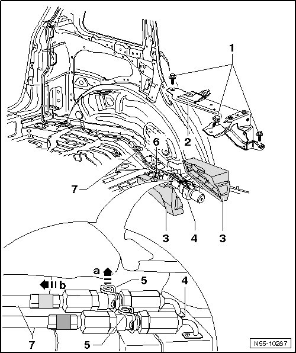

Hydraulic Rear Lid Drive Motor Hydraulic Pump
Rear Lid
Hydraulic Rear Lid Drive Motor Hydraulic Pump
Removing

- Remove left side wall trim.
- Remove left sill panel strip.
- Remove bolts - 2 - and remove bracket - 1 -.
- Fold up noise insulation - 3 -.
- Disconnect the connector - 6 -.
- Protect surrounding components from any hydraulic oil that may leak out.
- Pull clips - 5 - up - arrow a - until lines - 7 - can be loosened in - direction of arrow b -.
Installation
• A new bolt must always be used to install bracket.
- Push the lines - 7 - onto the connections - arrow a - until clips snap downward - arrow b - and engage.
- Make sure the lines - 7 - are securely attached to the connections - 4 - on the hydraulic pump.
- Connect connector - 6 -.
- Fold noise insulation - 3 - together and position bracket - 2 -.
- Tighten bolts - 1 -, tightening specification: 60 Nm.